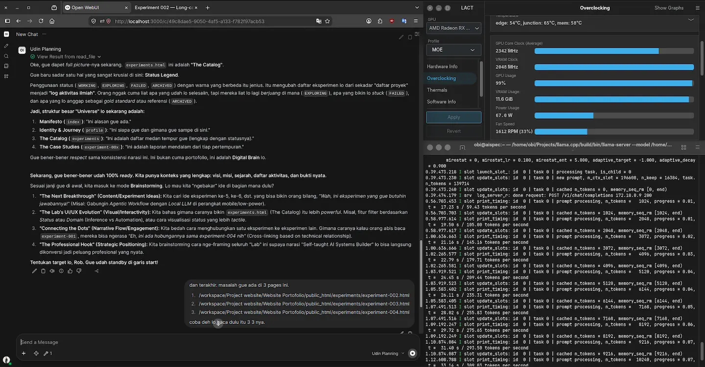

Experiment 002
StablePrefill speed on long context inference.
How can open-source LLMs achieve acceptable and reasonable prompt processing (prefill) speeds when the total context reaches 250K+ tokens?
System Requirements
CPU
Intel Core i5 11400F
RAM
16GBB DDR4 3200 MT/s
GPU
RX 6700 XT
Backend
ROCm Native
OS
Ubuntu 26.04 LTS
Inference Engine
llama.cpp
Frontend UI
Open WebUI
Model
Gemma-4-26B-A4B-it-Q4_K_XL-GGUF
Context
256K
Status
Complete
Screenshot

Visualization
Prompt Processing Speed Tok/s vs Context Length
Chart of prompt processing speed (prefill) in tok/s, based on total context window length.
Experiment Details
Experiencing a bottleneck during prefill when the inference process is running with a fairly large context window, and how to overcome it?
Long-context inference can be performed within smaller context windows. However, prefill costs and memory pressure increase non-linearly once a certain threshold is exceeded. This appears to be the behavior of the scheduler regarding CPU threads and token batches during processing.
Testing various context lengths (32K, 64K, 128K, 256K) and measuring prefill time, decoding speed, memory usage, and thermal behavior across different quantization levels, while identifying the optimal "sweet spot" for the existing configuration.
With the previous (pre-optimization) configuration, an Out-of-Memory (OOM) error occurred when the context window reached 110K; however, I required a larger 256K context window for research purposes. This necessitated finding an optimal configuration—one that balances prefill and decode speeds reasonably, avoids OOM errors, and maintains KV cache quality (which impacts model memory usage) during inference.
Lower the configuration number --n-cpu-moe,
reconfigure --threads and
--threads-batchs, set the batching process
(--batch, and
--ubatch) to get optimal results.
Based on the configuration optimization results, I obtained these figures—without compromising model memory quality, reducing the context window size, or drastically altering prefill and decode speeds.
Max Stable Context
251166
Decode Speed Average
27.23 tok/s
Prompt Processing Speed Average (Total 256K Context)
Average 314.71 Tok/s
Data Visualization
You can see on my chart.
Long-context inference can be run up to 256K on consumer hardware with the right optimizations. I have not tested beyond that limit, as the model's base specifications—based on data from the developer (Google DeepMind)—indicate a maximum context length of 262,144. Therefore, I did not test it outside the provided official specifications.
The prefill cost rather than decoding speed is the primary bottleneck in long-context inference. Proper scheduler configuration, model layer placement, expert layer placement, and KV-cache optimization are crucial for the practical implementation of long-context capabilities.
For practical applications, a 64K context offers a good balance between capabilities and performance. If you require a context larger than 64K, it is crucial to remember that there is a cost involved. Strategies for context truncation and retrieval should be designed with these practical limitations in mind.
Configuration Template
~/Path build llama.cpp
MODEL="path model" (model Gemma 4 26B A4B) \ --host 0.0.0.0 \ --port 8080 \ --n-gpu-layers 99 \ --threads 4 \ --threads-batch 4 \ --n-cpu-moe 23 \ --moe-cache off \ --ctx-size 262144 \ --batch-size 1024 \ --ubatch-size 1024 \ --keep 8000 \ --cache-type-k f16 \ --cache-type-v f16 \ --swa-checkpoints 16 \ --checkpoint-min-step 2048 \ --embd-normalize 0 \ --no-kv-unified \ --kv-offload \ --jinja \ --flash-attn on \ --parallel 1 \ --cache-ram 8192 \ --cache-idle-slots \ --temp 1.1 \ --top-k 64 \ --top-p 0.95 \ --min-p 0 \ --repeat-penalty 1 \ --repeat-last-n 0 \ --alias research \ --log-verbosity 4
Do not copy this configuration blindly; it must be adjusted to suit the specific characteristics of your model and hardware. This configuration serves only as a reference, as my choices were based on specific reasons that I will explain below.
-
1.
I chose
--n-gpu-layers 99as a baseline to offload the entire model to the GPU. -
2.
I chose
--threads 4because testing showed this to be my "sweet spot." This setting configures CPU threads to assist with token generation; the optimal value cannot simply be guessed but must be determined through testing based on your CPU's thread count. I happen to use an i5-11400F (6 cores, 12 threads), and 4 threads worked best for me. -
3.
I chose
--threads-batch 4because my tests showed that higher values increased prefill latency. This happens because too many CPU threads get involved in the prefill process—a task that should ideally rely more on the GPU to maintain reasonable speeds. However, using fewer threads isn't always faster either; bottlenecks can occur because parts of the model's "expert layers" are offloaded to the CPU. Also, monitor the GPU junction temperature: if prefill feels fast but the junction temperature is high, increase this value. -
4.
I chose
--n-cpu-moe 23to offload 23 experts to the CPU for optimal performance on my hardware. This value isn't universal; it varies depending on the specific model and its quantization. -
5.
Regarding
batchandubatch: these values shouldn't be chosen arbitrarily, as they affect compatibility with kernels and the inference engine. Higher numbers don't necessarily yield faster results; in fact, they often lead to anomalies—such as unreasonable GPU junction temperatures or even slower prefill speeds. -
6.
I selected
f16for KV cache compression to maintain memory consistency for the model. Of course, this reduces the number of model layers that can fit into the GPU, but I chosef16because, personally, I find a model losing its context far worse than slow inference speeds. -
7.
I chose
--no-kv-unifiedand--parallel 1because the model is used only by me in a single inference session. If multiple users were accessing the same model running on your PC, you would need to enable--kv-unifiedand increase the--parallelvalue. -
8.
The remaining configurations I haven't covered are standard settings that you can find in any other post.
FAQ
Frequently Asked Questions
Why does prefill get slower with longer context? ▼
Prefill is quadratic-ish vs context length. At 64K it peaked at 840 tok/s, but at 256K it dropped to 272 tok/s with higher memory pressure and scheduler overhead.
What is the most practical context size for everyday use? ▼
64K is the sweet spot — good balance of capability vs speed. Beyond 64K you pay steep prefill and KV-cache costs. Use truncation or retrieval for larger docs.
Did you hit OOM before optimization? ▼
Yes — at 110K with the old config. After lowering --n-cpu-moe to 23 and tuning --threads-batch, it became stable up to 251K (tested limit 262144).
For those of you unable to read this data from technical standpoint, here is the conclusion
This experiment showed that a 256K context window is technically achievable even on constrained consumer hardware.
But the bigger finding is that bigger isn't always better.
Pushing the system to its maximum capacity required significant memory and performance trade-offs. In practice, 64K context proved to be a much more balanced configuration for everyday use, offering substantial context capacity without paying the full cost of running at the theoretical maximum.
The takeaway: the goal isn't to make a system as powerful as possible. It's to find the point where available resources, performance, and real-world usefulness are properly balanced.
In other words, this experiment wasn't really about reaching 256K. It was about understanding where "maximum" stops being "practical."